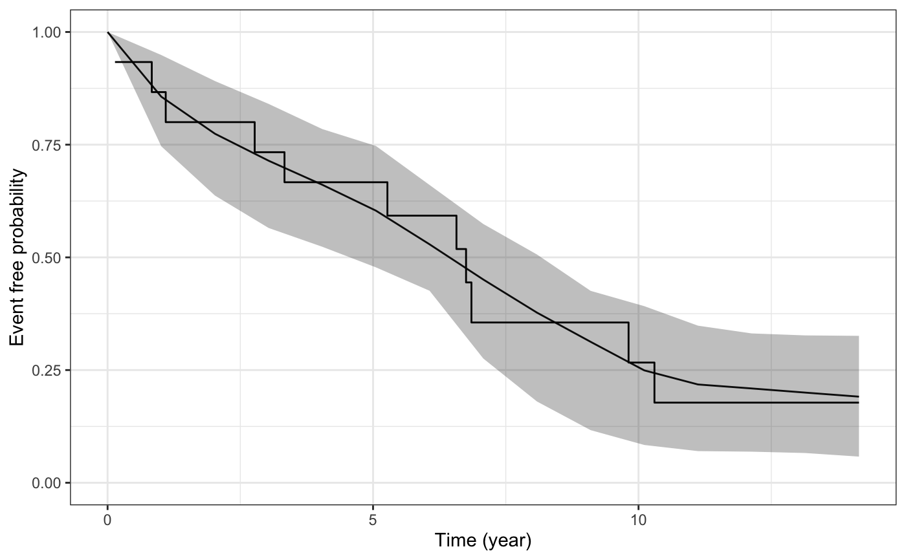

ps_check.RdThis function plots the estimated marginal survival function based on draws from the posterior predictive distribution of the fitted joint model, and then overlays the Kaplan-Meier curve based on the observed data.
ps_check(object, check = "survival", limits = c("ci", "none"), draws = NULL, seed = NULL, xlab = NULL, ylab = NULL, ci_geom_args = NULL, ...)
| object | A fitted model object returned by the
|
|---|---|
| check | The type of plot to show. Currently only "survival" is allowed, which compares the estimated marginal survival function under the joint model to the estimated Kaplan-Meier curve based on the observed data. |
| limits | A quoted character string specifying the type of limits to
include in the plot. Can be one of: |
| draws | An integer indicating the number of MCMC draws to use to to estimate the survival function. The default and maximum number of draws is the size of the posterior sample. |
| seed | An optional |
| xlab, ylab | An optional axis label passed to
|
| ci_geom_args | Optional arguments passed to
|
| ... | Optional arguments passed to
|
A ggplot object that can be further customized using the ggplot2 package.
posterior_survfit for the estimated marginal or
subject-specific survival function based on draws of the model parameters
from the posterior distribution,
posterior_predict for drawing from the posterior
predictive distribution for the longitudinal submodel, and
pp_check for graphical checks of the longitudinal submodel.
# \donttest{ if (!exists("example_jm")) example(example_jm) # Compare estimated survival function to Kaplan-Meier curve ps <- ps_check(example_jm) ps + ggplot2::scale_color_manual(values = c("red", "black")) + # change colors ggplot2::scale_size_manual(values = c(0.5, 3)) + # change line sizes ggplot2::scale_fill_manual(values = c(NA, NA)) # remove fill# }